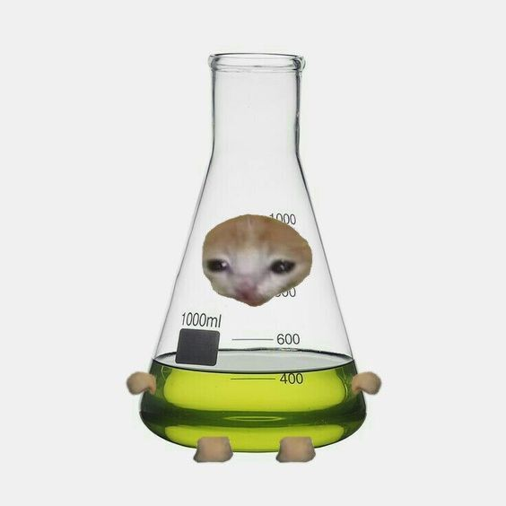
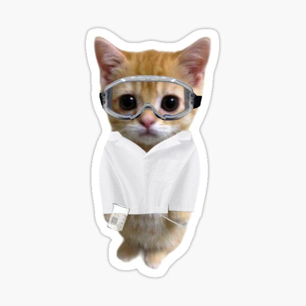
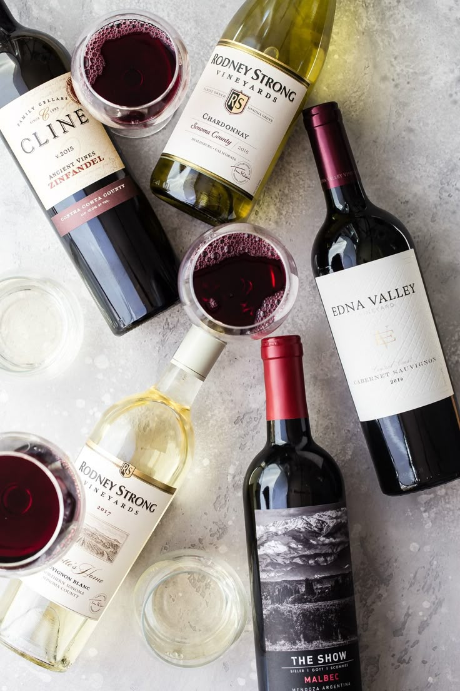
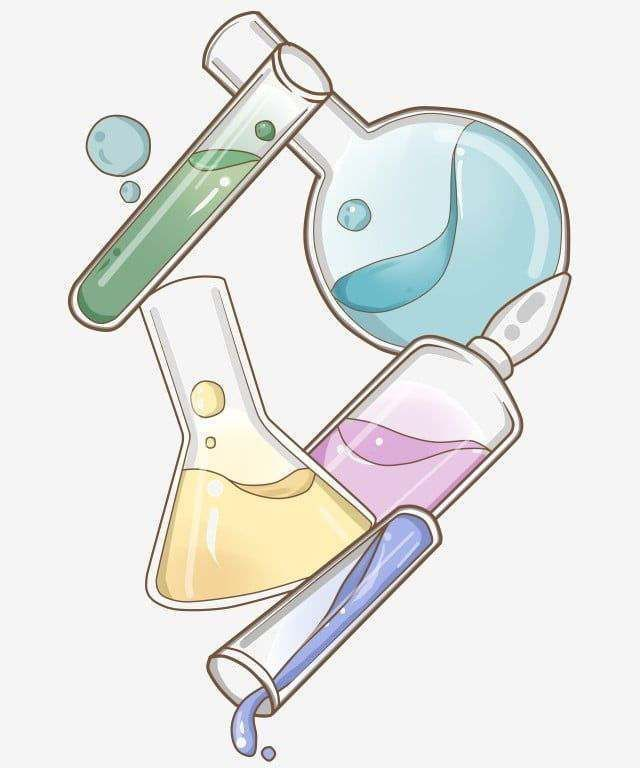
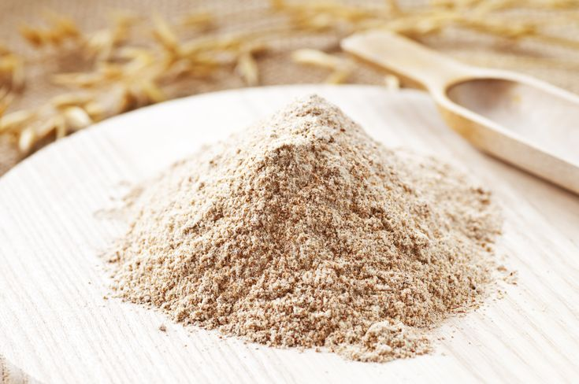
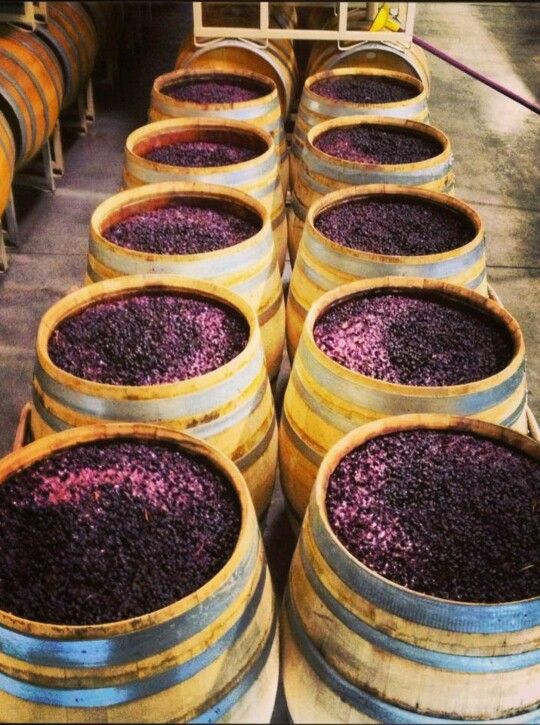

Jelajahi bagaimana mikroorganisme mengubah buah menjadi mahakarya melalui proses fermentasi yang presisi.



Secara sederhana, Wine adalah minuman beralkohol yang dibuat dari sari buah anggur yang telah melalui proses fermentasi. Tanpa tambahan gula, asam, atau nutrisi lain, ragi mengonsumsi gula dalam anggur dan mengubahnya menjadi etanol serta karbon dioksida.
Dalam dunia sains, ini adalah salah satu bentuk tertua dari penerapan bioteknologi dalam kehidupan manusia.
| Fitur | Bioteknologi Konvensional | Bioteknologi Modern |
|---|---|---|
| Teknik | Fermentasi alami & seleksi varietas. | Rekayasa genetika & DNA rekombinan. |
| Alat | Sederhana (Tong, kain saring). | Canggih (PCR, Sekuensing DNA). |
| Mikroorganisme | Utuh (Ragi, Bakteri). | Bagian sel atau DNA yang dimodifikasi. |
| Hasil | Kurang terukur/alami. | Sangat presisi & bisa dikustomisasi. |
Konsep dasar penggunaan makhluk hidup.

Simulasi suhu dan rumus kimia.

Mengenal peran vital S. cerevisiae.

Proses hulu ke hilir pembuatan wine.